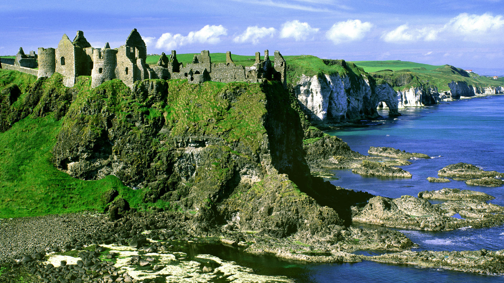
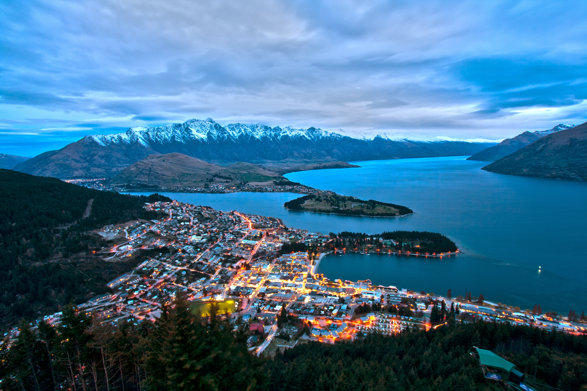

Ireland
Ireland’s compact size means that you can easily access mountains from the main cities – on Divis and the Black Mountain in Belfast, you can look all the way across to Scotland on a clear day, while the beautiful Wicklow Mountains are an unexpected retreat just a 30-minute drive outside the urban buzz of Dublin city.

New Zealand
New Zealand (or Aotearoa – land of the long white cloud), truly is one of the most picturesque and photogenic places on earth. A small island nation of just over 4.5 million people, New Zealand is made up of two major land masses (North Island and South Island) and a number of smaller islands including Stewart Island located in the southwestern Pacific Ocean. The two main islands are divided by a 22km stretch of water called the Cook Strait.
Japan
Japan has many islands, but also has many forests as well. The forests of Japan cover about 25.12 million hectares, which adds up to roughly 66% of the entire national land area. This means that Japan has one of the largest forest coverage rates in the world. Other areas used consist of 5.04 million hectares of agricultural land, 3.06 million hectares of other land, 1.74 million hectares of residential land, 1.33 million hectares of water surfaces, rivers, and channels, 1.23 million hectares of roads, and 260 thousand hectares of wilderness areas.